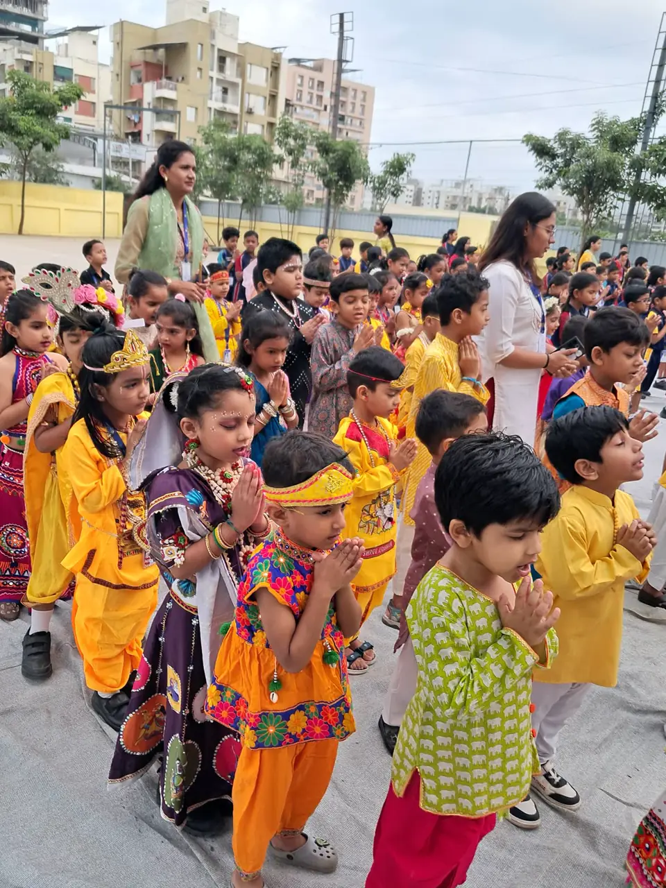
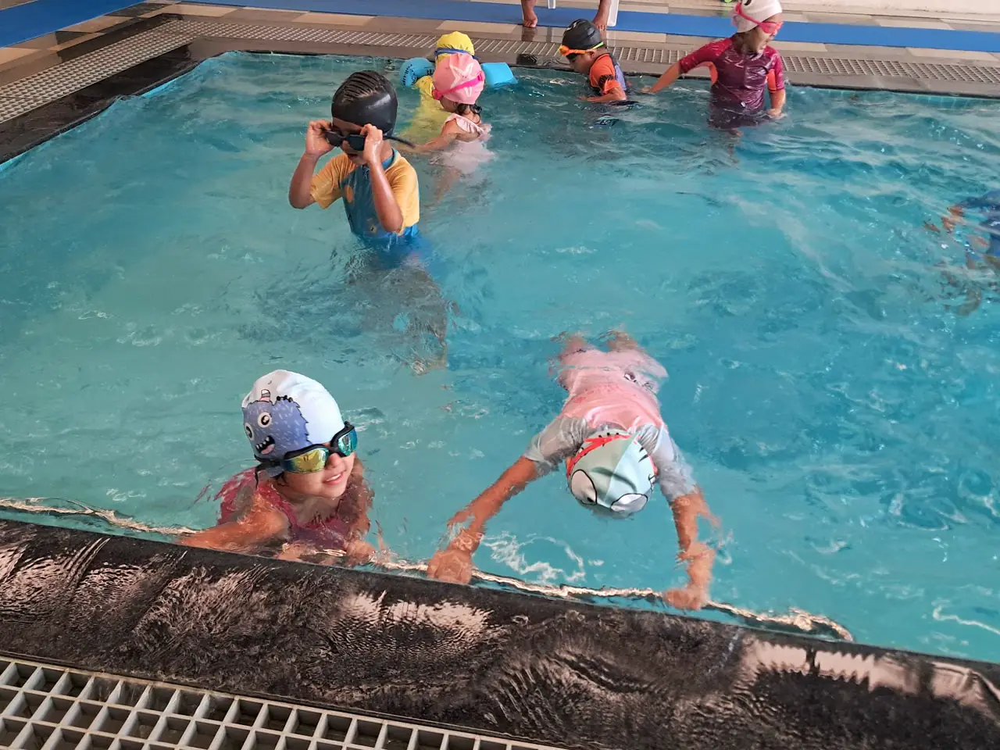
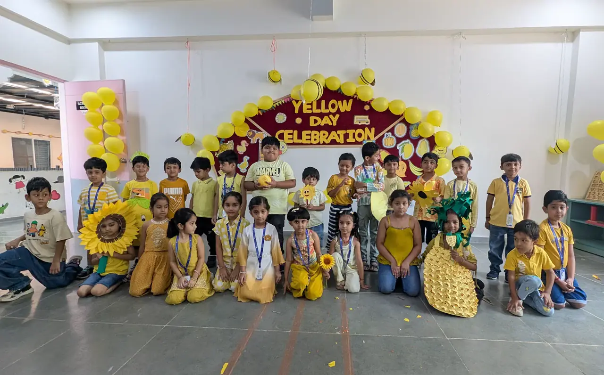
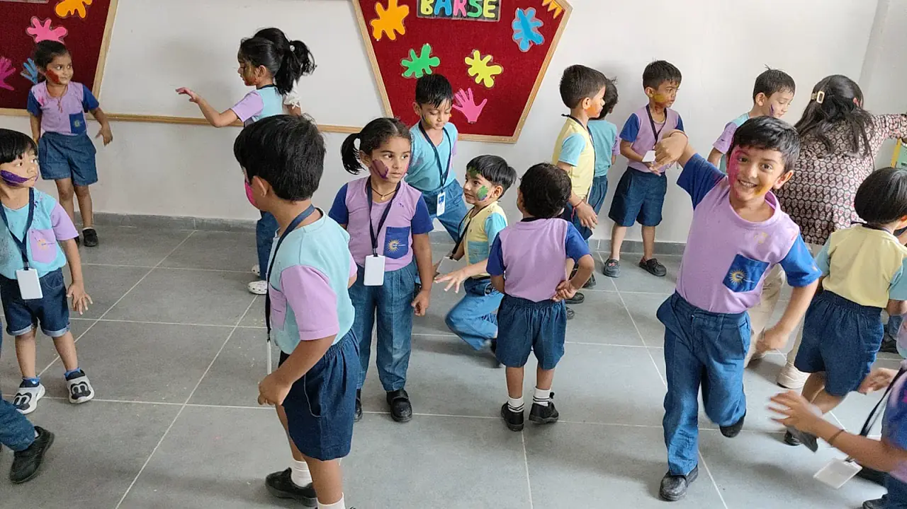
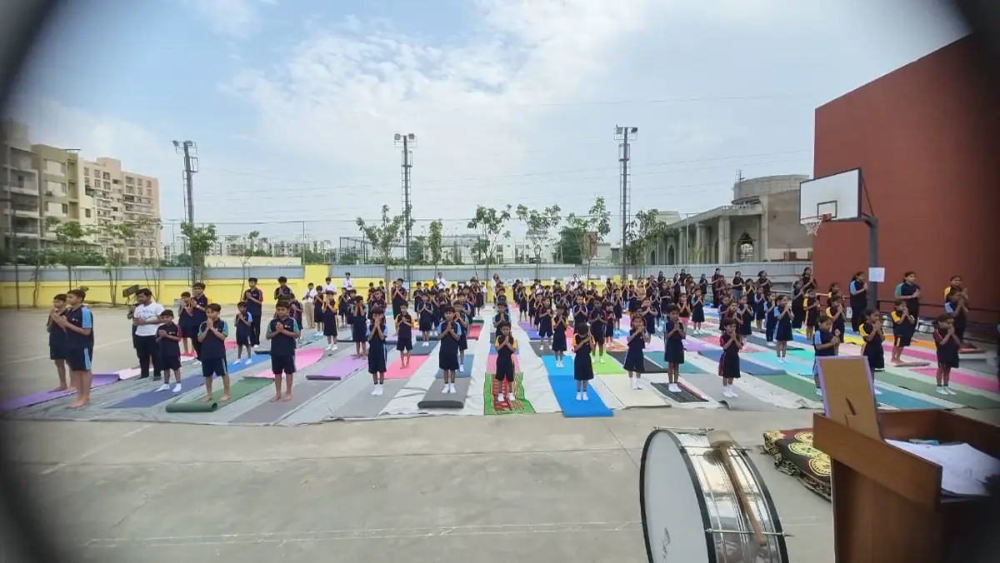
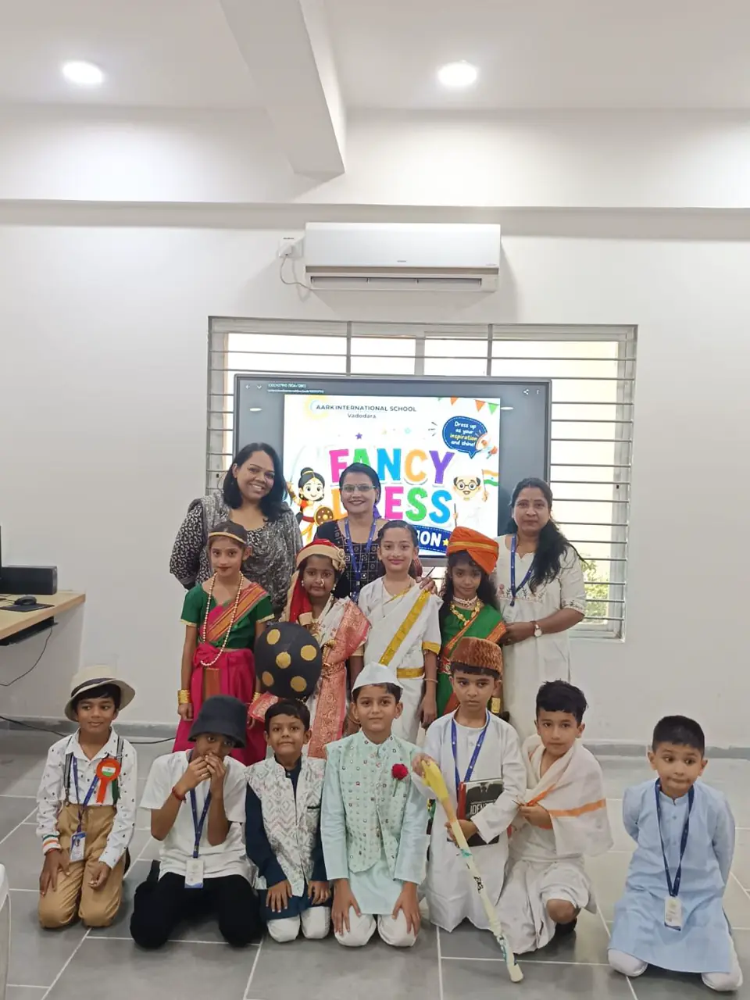
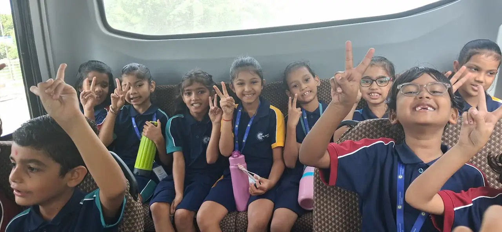
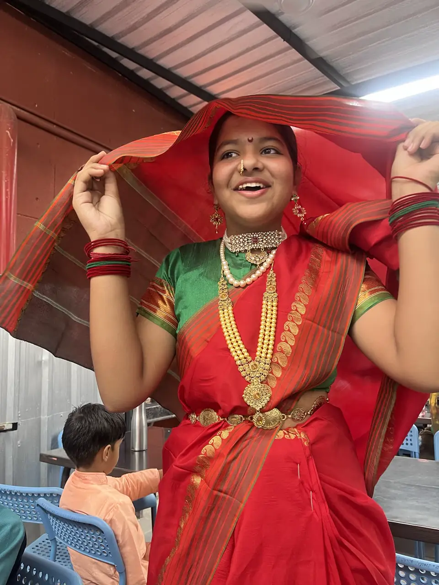
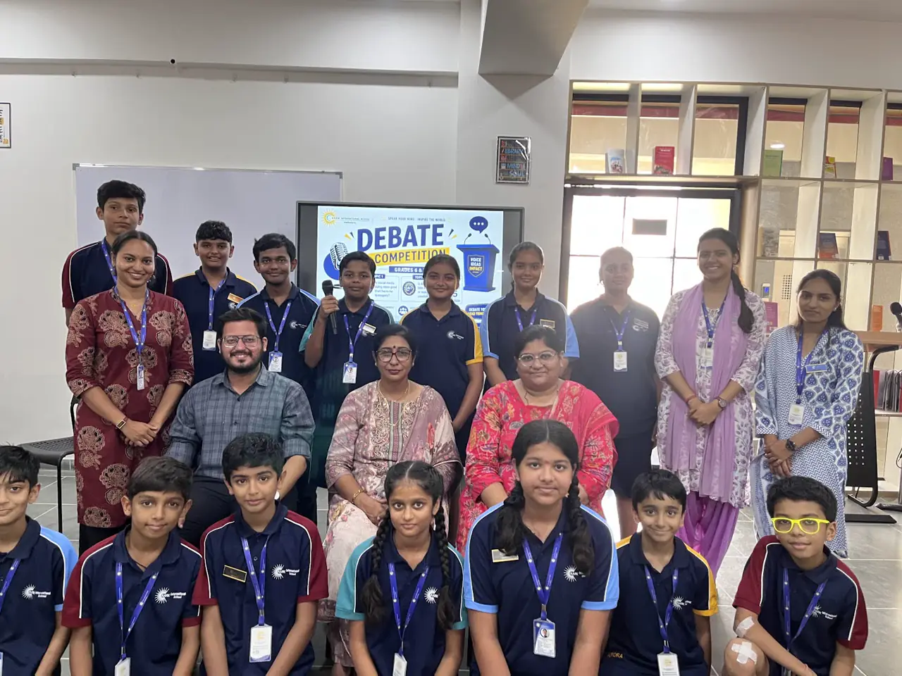

School Life
Gallery.
Moments from AARK's sports days, annual functions and events across the school year.









Coming up
- Swimming ExpoPrep, Sr KG, Grades 1–2 · 24 Sep 2026
- Swimming ExpoGrades 8–11 · 26 Sep 2026
- Annual FunctionPrep through Grade 11 · 24 Dec 2026
- Annual Sports DayPre-Primary · 29 Jan 2027
- Annual Sports DayGrades 1–12 · 30 Jan 2027
- Annual Result Day20 Mar 2027